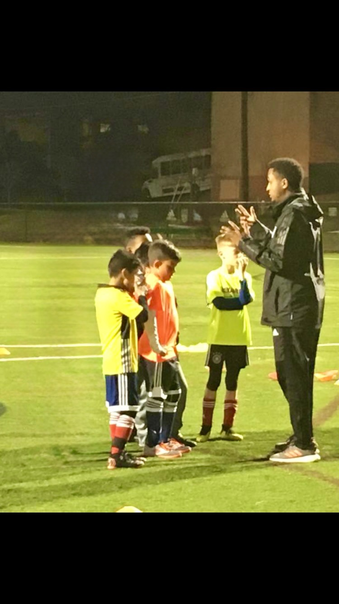

The coach
Coach Daniel
I was born and raised in Eritrea, where soccer was always at the heart of my life.
I learned the game in the streets of my neighborhood. Those early years gave me creativity, grit, and a lasting love for soccer. At Sawa Secondary School, I played defensive midfield as the number 6, serving as the link between our defense and attack.
During my senior year, I helped lead our team into the National High School League. We fought our way to the final and finished as national finalists. That experience shaped the way I see leadership, teamwork, and the responsibility a coach has to every player.

Credentials
Always learning
I moved to the United States in 2009 with a clear goal: become a coach and keep learning the game. I hold USSF E, D, and C licenses, and I am currently a candidate for the USSF B License. I also hold Futsal Level 1 and Level 2 licenses.
- USSF E · Held
- USSF D · Held
- USSF C · Held
- USSF B · Candidate
- Futsal Level 1 · Held
- Futsal Level 2 · Held
My coaching journey
-
2013 to 2023
Alexandria Soccer Association
After earning my E License, I joined Alexandria Soccer Association. I coached players from U9 through U16 and progressed through every level of competitive youth soccer, eventually serving as an MLS NEXT head coach.
-
2018
Veteran Coach of the Year
Alexandria Soccer Association recognized me as its Veteran Coach of the Year.
-
2019
Regional champions
I helped the 2007 Red boys win a regional championship as an assistant coach.
-
State Cup
Two finalist teams
As a head coach, I led both the 2008 Red boys and the 2007 Red boys to State Cup finals.
-
2016 to today
Private player development
I have spent the past ten years training recreational, academy, ECNL, and MLS NEXT players. I love helping each player improve every part of their game and grow in confidence.

Philosophy
Coach the player, not the drill
Ten years of individual training has taught me that no two players need the same thing. A nine year old learning to enjoy the ball, a fourteen year old working for a starting spot, and an eighteen year old preparing for college soccer each need a different kind of coaching.
What stays the same is the care behind the work. Every session has a purpose the player can explain, and every correction comes with a reason. Whether a player is just starting or already competing at an elite level, their development matters.
- Technical skill, refined
- Tactical intelligence, built
- Personal goals, reached